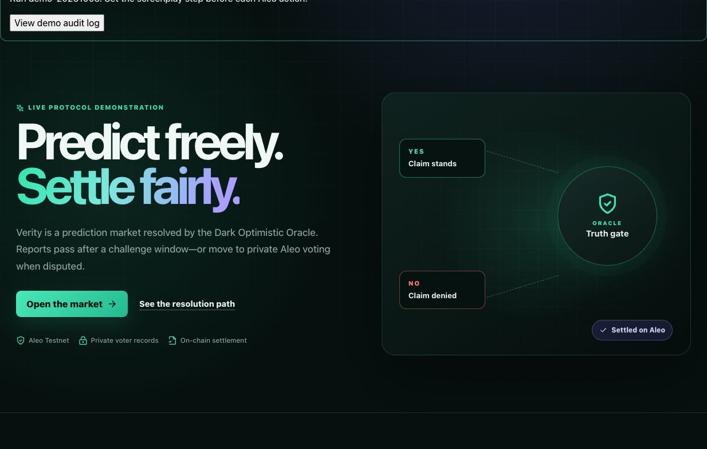
Published Verity site with the connected QA Shield account. Home, market and documentation share one URL. No transaction is implied by the overview.
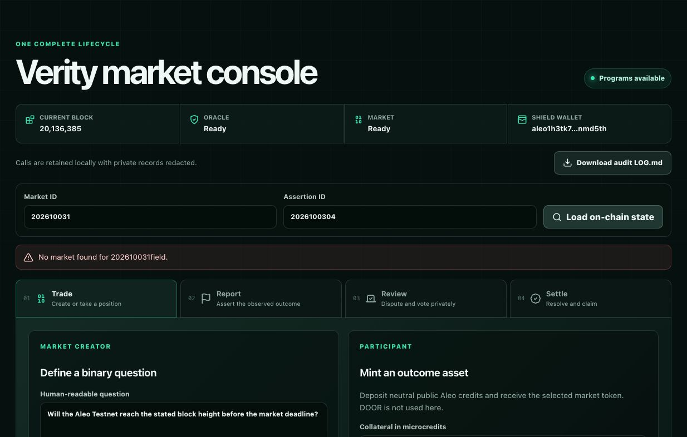
Actual mapping lookup found no market at fresh ID 202610031. Its suggested assertion ID is 2026100304; earlier QA state is preserved.
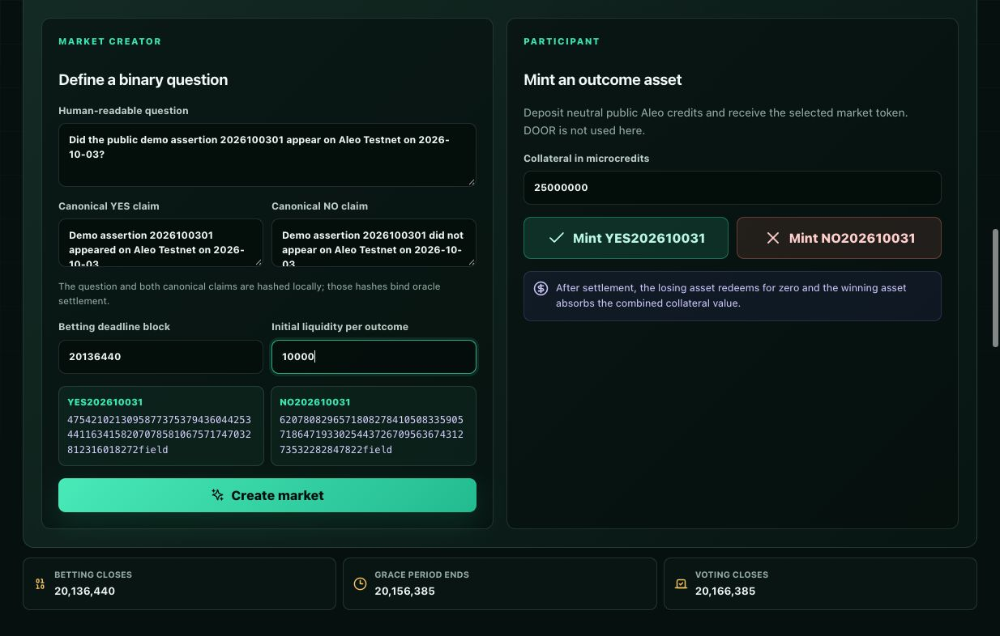
The binary question binds whether demo assertion 2026100301 appeared on Testnet. Distinct canonical claims are hashed; initial liquidity is 10000 microcredits per outcome and betting closes at 20136440.
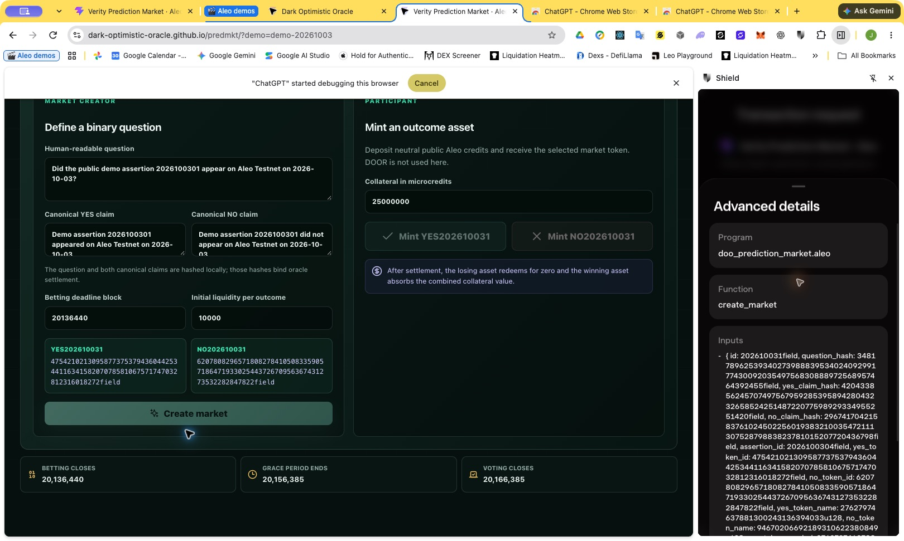
Shield received doo_prediction_market.aleo/create_market with the MarketConfig and 10000u64 liquidity. Exact public inputs are in LOG.md; wallet review alone does not prove acceptance.
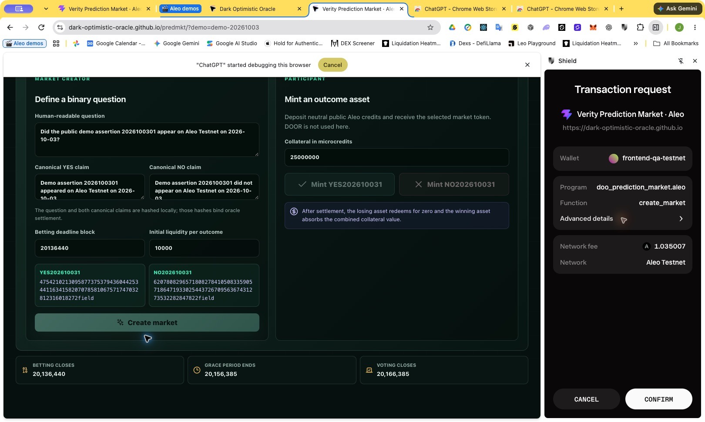
Actual market creation approval screen. Shield displayed a 1.035007-ALEO network fee; the transaction subsequently reached Testnet acceptance.
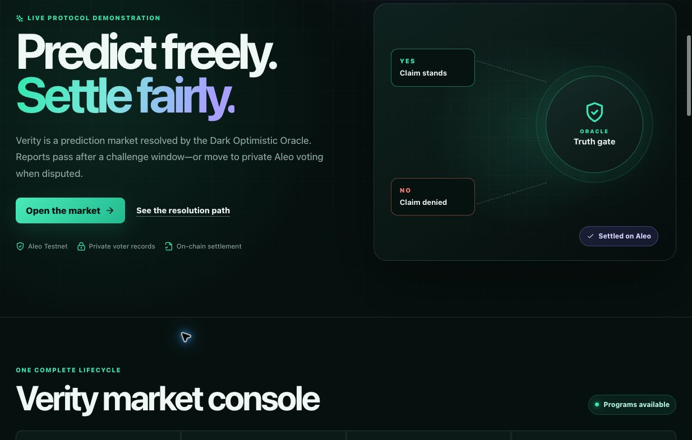
Market creation accepted, then a 20000-microcredit YES position was requested. YES and NO are market-specific assets; DOOR is not the collateral.
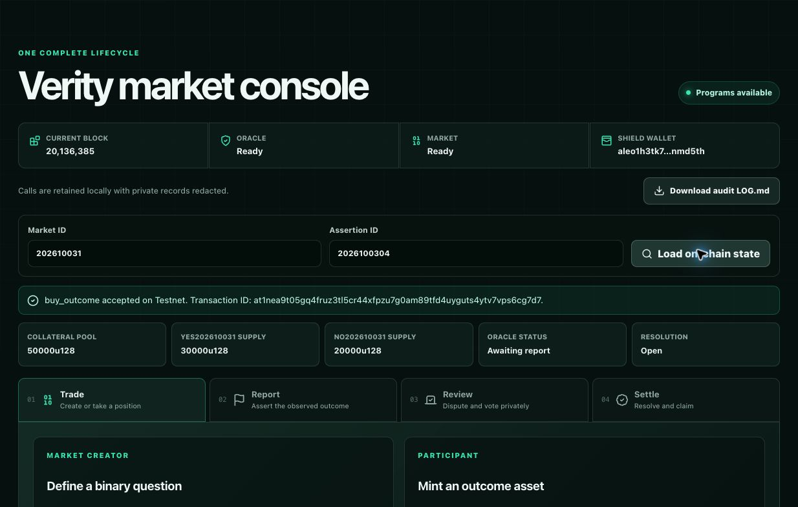
After accepted YES and NO purchases, actual state shows 50000 collateral, 30000 YES supply, 20000 NO supply and an open market. Provider indexing briefly returned the older state before this refresh.
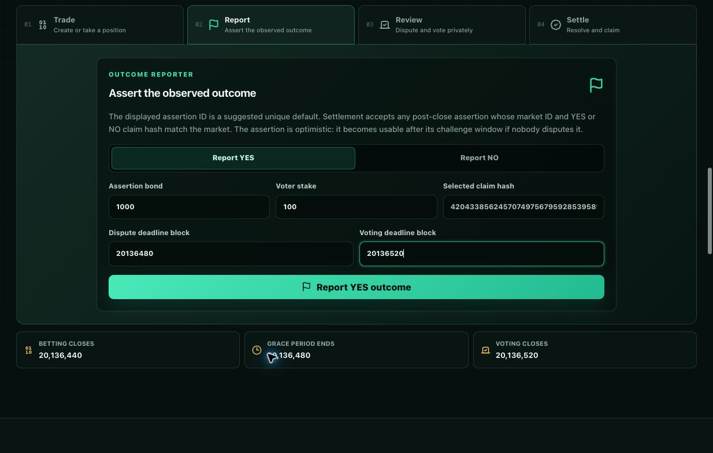
Prepared canonical YES report: assertion 2026100304, DOOR bond 1000, stake 100, grace deadline 20136480 and voting deadline 20136520. Submission occurred after betting closed.
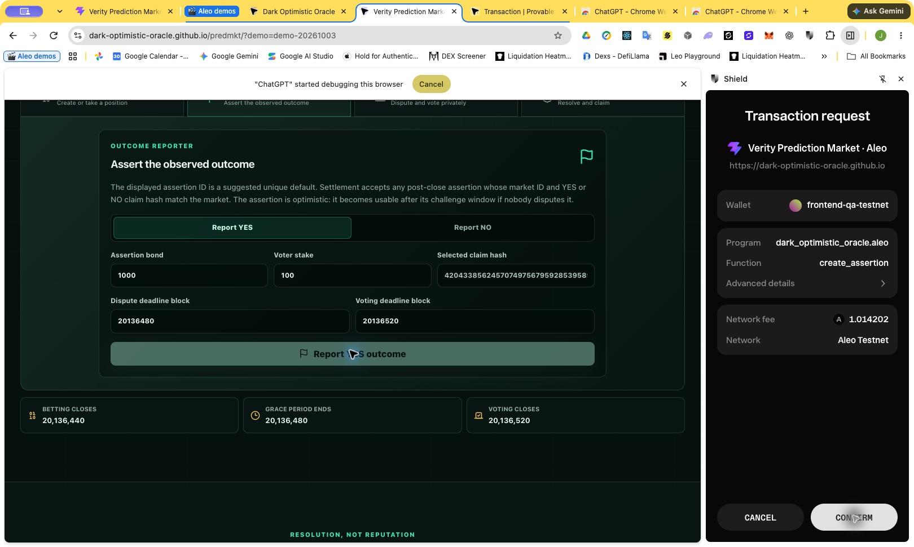
Shield approval for the Oracle create_assertion call initiated by Verity. The selected claim hash is bound to the market; displayed fee 1.014202 ALEO.
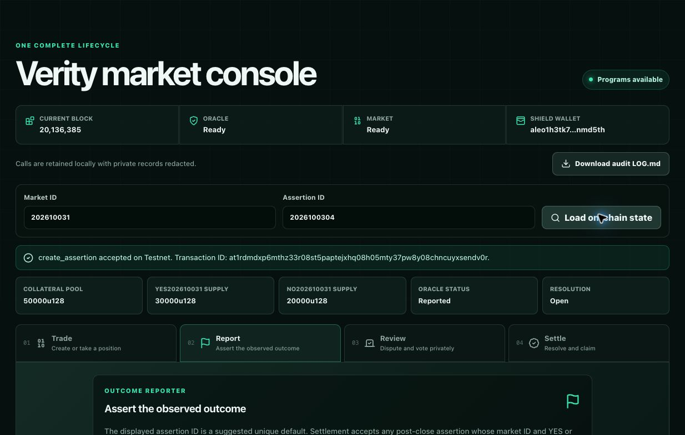
The YES report is accepted and the market remains open while the real grace period runs. No dispute or private vote is falsely claimed.
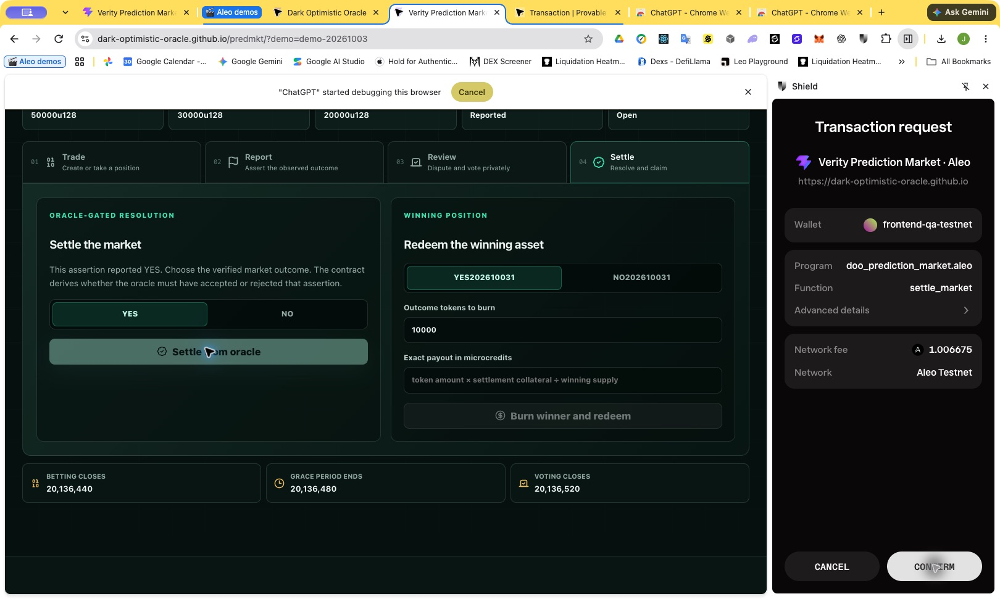
After live height exceeded 20136480, Shield reviewed settle_market. Reported YES and assertion_valid=true request an oracle-verified YES resolution; displayed fee 1.006675 ALEO.
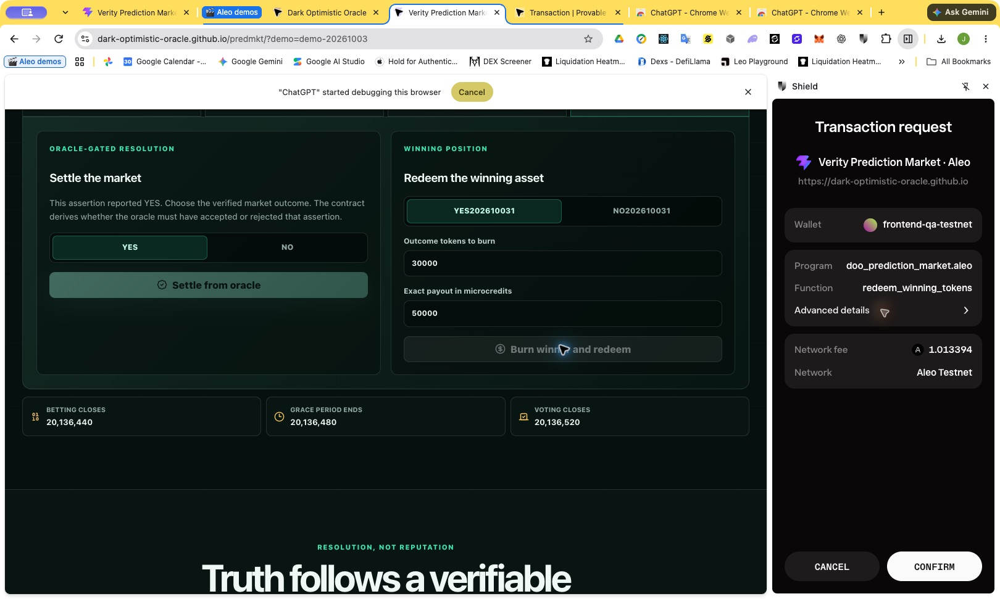
Actual redemption approval: burn all 30000 winning YES tokens for exactly 50000 microcredits. The losing NO asset has no redemption entitlement. Displayed fee 1.013394 ALEO.
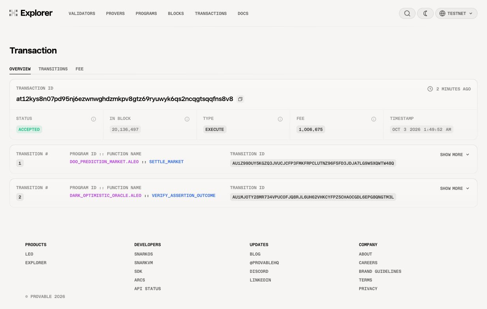
Explorer proves accepted market settlement with nested dark_optimistic_oracle.aleo/verify_assertion_outcome in block 20136497. This is the actual deployed verifier function.
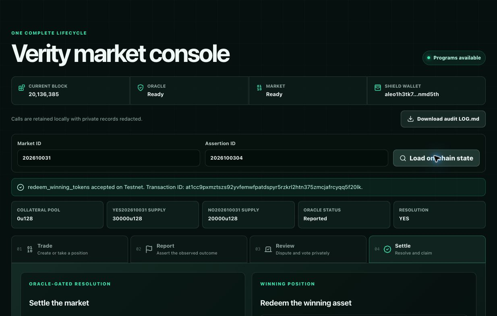
Final refreshed market state after redemption: resolved YES and zero collateral remaining. Supply mappings retain the settlement denominator; registry burning occurs in the redemption transaction.
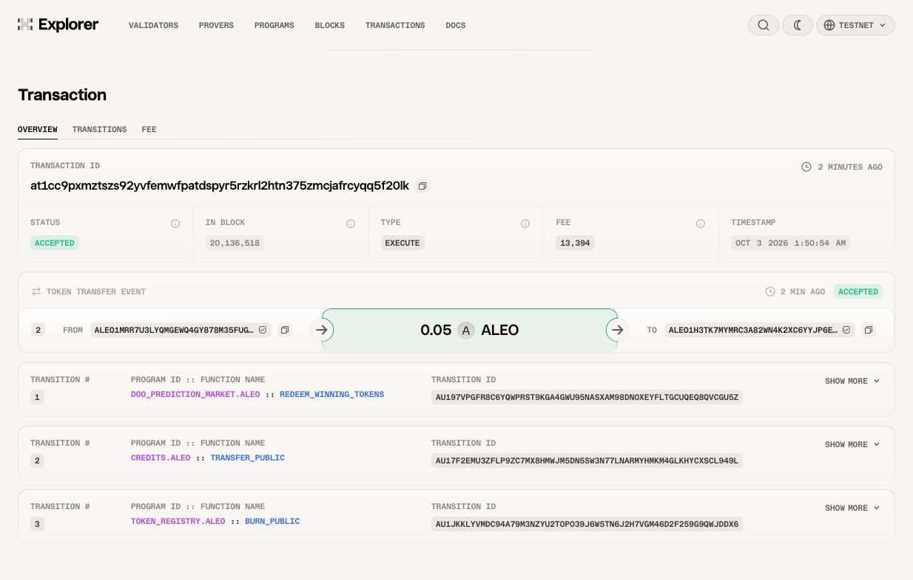
Explorer proves accepted winning-token redemption, including nested registry burn and credits payment. Accepted transaction IDs and wallet request IDs are preserved in the call sequence and LOG.md.
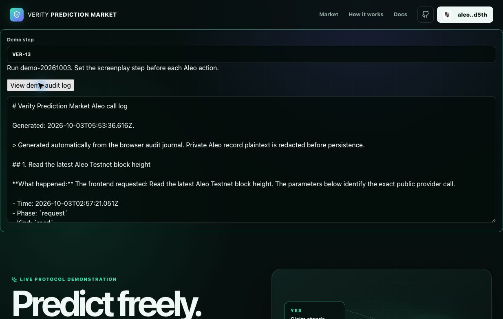
The exported audit journal marks calls with screenplay steps, ordered operation explanations and normalized JSON. The journal is retained in repository LOG.md; private branches remain pending preparation.